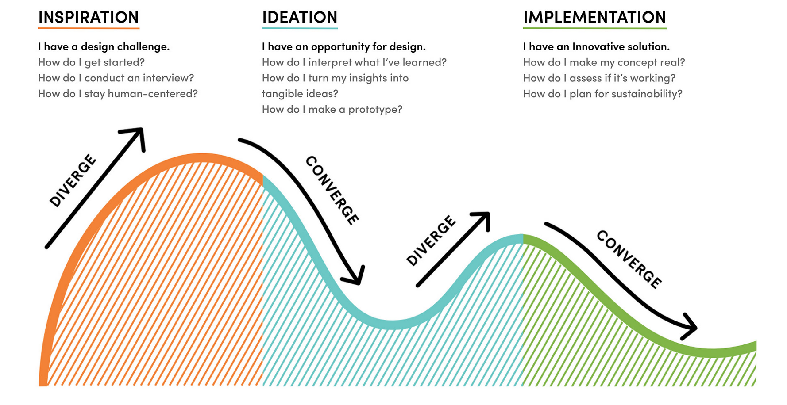

Projets
1.Fler Culture
Context
Fler est un magazine en ligne sur la thématique de la culture au sens large racontée au travers de portraits permettant de découvrir de « vrais
gens », leur histoire, leurs passions, des lieux.
Le magazine 100 % en ligne propose un contenu original dédié aux portraits et une parution régulière dans lequel apparaissent les portraits de personnes qui ne sont pas
du tout où peu connues du grand public. Leur ambition rédactionnelle est de raconter « les gens » dans leur authenticité. Ce type de portraits est peu traité par les médias traditionnelles qui la plupart du temps rédigent des portraits à vocation promotionnelle ou liés à l’actualité.
Le magazine souhaite se demarquer par un ton toujours positif qui place l’humain dans son authenticité comme
point de départ. (Exemple : parler d’un restaurant en racontant l’histoire de son propriétaire).
Le magazine orienté feel-good est principalement présents sur les réseaux sociaux notamment Facebook, instagram, Youtube, Twitter et Linkedin et sur leur site Fler.fr.
Le magazine en ligne a été créé il y’a moins d’un an (mai 2017) par 3 amies, Elisa, Jordane, Gabriella, toutes les trois issues d’école de journalisme.
Aujourd’hui, la fréquentation de leur site vient essentiellement de leur abonnés Facebook qui représentent une communauté de 686 abonnés. L’objectif clairement avoué était de faire un projet en commun qui leur plaise.
Plan de conception : Sprint Design

Dossier de conception